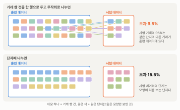

5. 점수를 믿어도 되나 — 누출#
보고서의 해석에는 이런 항목이 있습니다.
분할에 따른 차이 — 시험 데이터가 500개 단지뿐이어서, 단지를 다르게 나누면 점수가 1 ~ 2%포인트 달라진다. 닮은 단지 10개 모형과 회귀식의 차이도 그 정도다.
앞의 세 절에서 채점하는 법을 세웠습니다. 점수는 시험 데이터로 매기고, 훈련 데이터의 점수와 비교하고, 몇 개를 볼지는 교차검증으로 고릅니다. 그런데 이 규칙을 다 지켜도 점수를 그대로 믿기 어려운 때가 있습니다. 이 절의 물음은 두 가지입니다. 시험 데이터의 점수는 얼마나 흔들리는가. 시험 데이터로 채점했는데도 점수가 부풀려지는 때는 언제인가.
점수는 분할에 따라 흔들린다#
시험 데이터의 점수는 어떤 단지가 시험 데이터로 뽑혔느냐에 따라 달라집니다. 단지를 다르게 나눠 여섯 번 채점한 결과가 표 5-1입니다.
표 5-1. 단지를 다르게 나눌 때마다의 시험 오차
분할 |
회귀식 |
닮은 단지 10개 |
|---|---|---|
보고서의 분할 |
15.8% |
14.6% |
다른 분할 1 |
15.5% |
15.8% |
다른 분할 2 |
16.1% |
14.1% |
다른 분할 3 |
16.7% |
14.9% |
다른 분할 4 |
16.9% |
14.5% |
다른 분할 5 |
15.8% |
14.7% |
표에서 보듯이 같은 모형인데도 회귀식은 15.5%에서 16.9%까지, 닮은 단지 10개 모형은 14.1%에서 15.8%까지 나옵니다. 모형이 달라진 것이 아니라 시험지가 달라진 것입니다. 문제 수가 적은 시험일수록 어떤 문제가 나왔느냐에 점수가 흔들립니다. 여섯 번 가운데 다섯 번은 닮은 단지 10개 모형이 낮지만, 다른 분할 1에서는 회귀식이 더 낮습니다.
그래서 1%포인트 안팎의 차이로 어느 모형이 낫다고 말하기는 어렵습니다. “회귀식은 15.8%, 닮은 단지 10개 모형은 14.6%이니 1.2%포인트 낫다”보다 “회귀식은 16%쯤, 닮은 단지 10개 모형은 15%쯤”이 정직합니다.
💡 팁: AI가 1%포인트 안팎의 차이로 어느 모형이 낫다고 말하면 “분할을 다섯 번 바꿔서 다시 채점해 줘”라고 요청해 보세요.
시험지에 기출문제가 섞였다면#
시험 데이터로 채점했는데도 점수가 부풀려지는 때가 있습니다. 시험 데이터 안에 훈련 데이터와 사실상 같은 것이 들어 있을 때입니다.
이 장의 데이터에서도 그런 상황이 발생할 수 있습니다. 이 장은 84㎡ 거래 19,987건을 단지별로 모아 썼습니다. 이번에는 모으지 않고 거래 한 건을 한 행으로 둡니다. 19,987건을 무작위로 나눠 20%를 시험 데이터로 떼고, 가장 닮은 거래 1건의 가격으로 맞혀 봅니다. 3절의 닮은 단지 1개 모형과 같은 모형입니다.
이렇게 하면 시험 데이터의 오차가 6.5%로 나옵니다. 단지로 모아서 채점했을 때는 16.1%였습니다. 같은 변수, 같은 모형인데 점수가 두 배 넘게 좋아졌습니다.
까닭은 시험 데이터에 있습니다. 한 단지에서 1년 동안 여러 건이 거래되니, 거래를 무작위로 나누면 같은 단지의 거래가 훈련 데이터와 시험 데이터 양쪽에 흩어집니다. 시험 거래의 96%는 같은 단지의 다른 거래가 훈련 데이터에 있었습니다. 같은 단지의 거래는 구, 연식, 최고층이 똑같으니, 가장 닮은 거래를 찾으면 대개 같은 단지의 다른 집이 뽑힙니다. 같은 단지의 다른 거래 가격을 그대로 가져왔으니 잘 맞을 수밖에 없습니다. 본시험 문제가 기출문제집에 그대로 실려 있었던 셈입니다. 같은 단지의 거래가 양쪽에 함께 들어가지 않게 단지째 나누면 오차는 15.5%로 돌아옵니다. 그림 5-1은 두 가지 나누는 법을 나란히 놓은 것입니다.

그림 5-1. 거래 한 건을 한 행으로 둔 데이터를 나누는 두 가지 방법. 네모 하나가 거래 한 건이고, 같은 색은 같은 단지의 거래다. 위: 거래를 무작위로 나누면 같은 단지의 거래가 양쪽에 흩어진다. 아래: 단지째 나누면 한 단지의 거래는 한쪽에만 있다. 오차는 가장 닮은 거래 1건으로 맞힌 시험 데이터의 오차.
그림에서 보듯이 위쪽처럼 거래를 무작위로 나누면, 시험 데이터의 거래마다 같은 색의 거래가 훈련 데이터에 있습니다. 모형은 그 거래를 가장 닮은 거래로 찾아 가격을 그대로 가져옵니다. 아래쪽처럼 단지째 나누면 시험 데이터의 색은 훈련 데이터에 하나도 없습니다. 모형이 정말로 처음 보는 단지의 가격을 맞혀야 하므로, 점수가 단지로 모아 채점했을 때와 비슷하게 돌아옵니다.
이렇게 시험 데이터의 답을 짐작하게 해 주는 정보가 훈련 데이터에 흘러 들어가 있는 것을 누출(data leakage)이라고 합니다. 누출이 있으면 시험 데이터의 점수가 처음 보는 단지에서보다 좋게 나옵니다.
같은 실험에서 회귀식의 오차는 15.4%로, 단지로 모았을 때의 15.8%와 별 차이가 없습니다. 회귀식은 외울 수 없으니 기출문제가 섞여 있어도 덕을 보지 못합니다. 누출로 점수가 가장 크게 부풀려지는 것은 외우는 힘이 센 모형입니다.
누출은 다른 모습으로도 나타납니다. 환자 한 사람의 엑스레이 사진이 여러 장 있는데 사진을 무작위로 나누면, 같은 환자의 사진이 훈련 데이터와 시험 데이터에 함께 들어갑니다. 내일 도시락이 몇 개 팔릴지 맞히는 모형에 내일 가게에 온 손님 수를 변수로 넣는 경우도 있습니다. 지난 데이터로 채점할 때는 그날의 손님 수가 이미 적혀 있으니 잘 맞지만, 모형을 실제로 쓰는 오늘 밤에는 아직 알 수 없는 숫자입니다. 아파트 거래, 엑스레이 사진, 도시락, 세 경우 모두 확인할 것은 같습니다. 시험 데이터는 이 모형을 실제로 쓸 때 만날 데이터를 닮았는가. 처음 보는 단지의 가격을 맞힐 모형이라면 시험 데이터도 처음 보는 단지여야 합니다.
AI는 따로 말하지 않으면 대개 행을 무작위로 나눕니다. AI가 내놓은 점수가 기대보다 훨씬 좋을 때는 기뻐하기 전에 시험 데이터에 무엇이 들어 있는지부터 확인해야 합니다.
요약 — 이 절의 물음과 답
시험 데이터의 점수는 얼마나 흔들리는가? 시험 데이터가 500개 단지여서, 단지를 다르게 나누면 같은 모형의 오차가 1 ~ 2%포인트 달라진다. 그만한 차이로 모형의 우열을 가리지 않는다.
시험 데이터로 채점했는데도 점수가 부풀려지는 때는 언제인가? 시험 데이터에 훈련 데이터와 사실상 같은 것이 들어 있을 때다. 거래 한 건을 한 행으로 두고 무작위로 나누면 같은 단지의 거래가 훈련 데이터와 시험 데이터에 함께 들어가, 오차가 6.5%로 나온다(단지째 나누면 15.5%). 이것을 누출이라고 한다.